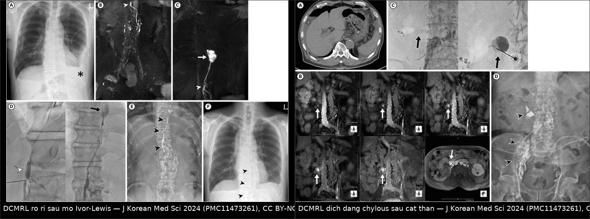
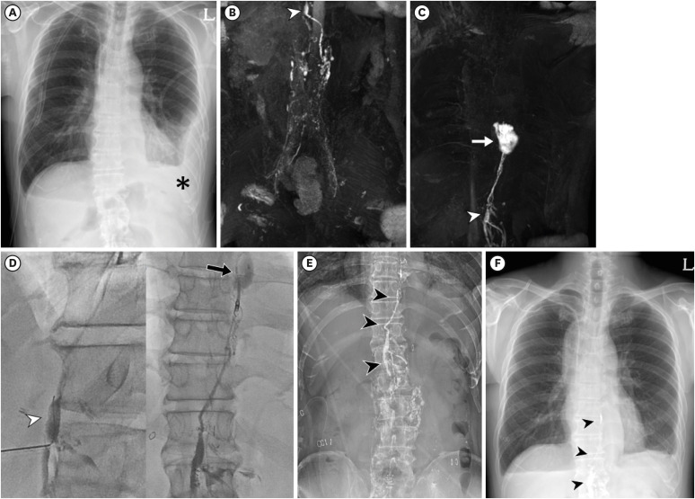
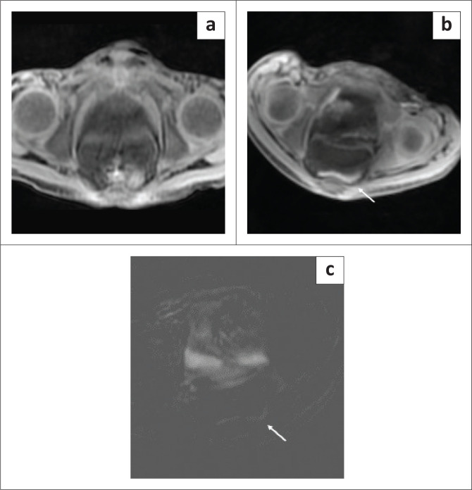
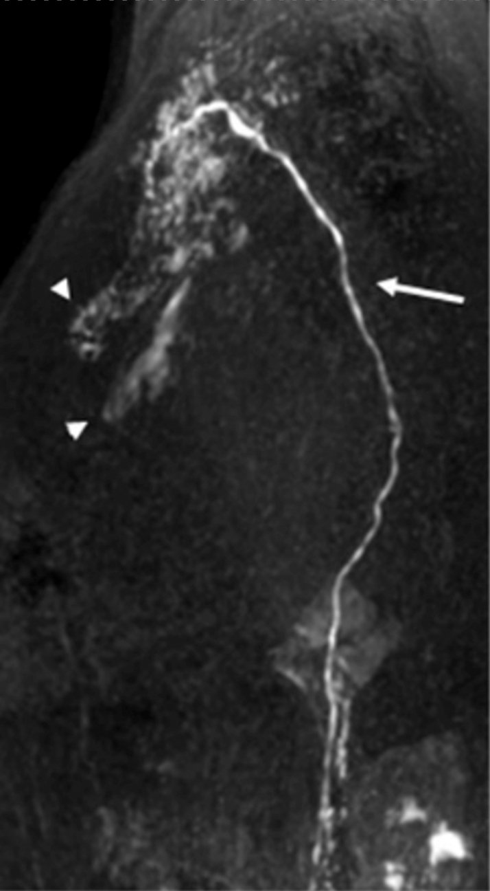

1822 — DCMRL (chụp bạch huyết bằng MRI động có cản quang): kỹ thuật, cách đọc ống ngực – rò bạch huyết – CCLA và khi nào nút ống ngực / Dynamic contrast-enhanced MR lymphangiography
Tags: pattern:ro-bach-huyet pattern:chylothorax pattern:chylous-ascites vung:trung-that vung:o-bung vung:mong-tim anatomy:ong-nguc anatomy:cisterna-chyli protocol:DCMRL protocol:T2-MRL protocol:lymphangiography score:CCLA incidentaloma:chylous-effusion
Mức chắc chắn (certainty): tổng hợp y văn (literature synthesis) — tự biên từ đoàn hệ 70 ca DCMRL (PMC11473261, CC BY-NC 4.0), ca chylopericardium sau ghép tim (PMC11233947, CC BY), 2 ca chylous ascites ở trẻ (PMC10476230, CC BY), tổng quan giải phẫu – kỹ thuật bạch huyết (PMC9892216, CC BY-NC) và tổng quan chẩn đoán – điều trị suy bạch huyết (PMC9999027, CC BY). Ảnh lấy từ 3 bài đầu.
Bài này là "mắt nhìn" cho nhóm bạch huyết đã có trong repo: 017 – Bạch mạch lan phổi, 077 – Gorham–Stout, 076 – Chyluria và 1808 – Sirolimus trong dị dạng bạch huyết. Bốn bài đó nói bệnh và thuốc; bài này trả lời câu hỏi thủ thuật: rò ở đâu, dòng đi đường nào, có nút được không, và bằng chứng hình ảnh nào đủ để đưa bệnh nhân vào phòng can thiệp.
Câu chốt: DCMRL không phải "MRI có cản quang" — nó là chụp mạch bạch huyết theo thời gian, sau khi tiêm gadolinium pha loãng vào hạch bẹn. Giá trị thực dụng nằm ở ba câu trả lời: ống ngực có hiện hình không (78,6% ca so với 50% của chụp bạch huyết huỳnh quang thông thường), rò ở đoạn nào, và có đường can thiệp qua da được không — trong 70 ca, 47,7% có giải phẫu can thiệp được, và 90,3% trong số đó điều trị thành công, so với 62,5% khi giải phẫu không thuận lợi (PMC11473261).
1. Tổng quan bệnh học – cơ chế hình ảnh
- Bạch huyết trung tâm (central conducting lymphatics, CCL) là gì: các thân bạch huyết thắt lưng từ chi dưới và tạng bụng đổ vào bể chứa dưỡng chấp (cisterna chyli) ở T12–L2, đường kính trung bình 6,7 mm, dài 1–2 cm; từ đó ống ngực đi lên qua khe cơ hoành giữa động mạch chủ và tĩnh mạch azygos, bắt chéo sang trái ở ngang T5, rồi đổ vào góc tĩnh mạch cảnh trong – dưới đòn trái ở C7. Nhiều van hai lá ở đoạn ống ngực xa ngăn máu trào ngược (PMC9892216).
- TẠI SAO phải chụp ĐỘNG (dynamic) chứ không chỉ chụp hình thái: bạch huyết chảy rất chậm (vài mm/giây) và không đều; một ảnh T2 dày (heavily T2-weighted) chỉ cho bản đồ giải phẫu tĩnh — thấy ống ngực to hay không, nhưng không thấy mũi thuốc đi qua lỗ rò. Chụp lặp lại mỗi 30 giây biến "có ống ngực" thành "dòng bạch huyết đi đâu, chỗ nào thoát ra ngoài".
- TẠI SAO gadolinium làm bạch huyết sáng — vật lý T1: Gd³⁺ rút ngắn T1 của proton nước xung quanh, nên dịch bạch huyết pha gadolinium tăng tín hiệu trên chuỗi T1 trong khi mô đệm và mỡ bị fat-sat dập. Vì nồng độ trong bạch huyết rất loãng, phải dùng dung dịch pha loãng 1:1 và chuỗi 3D T1 nhanh (THRIVE) — không dùng chuỗi T1 spin-echo thường vì thời gian quá dài so với tốc độ dòng.
- TẠI SAO tiêm vào HẠCH chứ không tiêm tĩnh mạch: gadolinium tiêm tĩnh mạch sẽ bị đào thải qua thận và làm sáng lòng mạch, không vào hệ bạch huyết đủ nồng độ. Tiêm trực tiếp vào nhu mô hạch bẹn đưa thuốc vào xoang dưới vỏ rồi theo mạch đi lên — đó là lý do kỹ thuật này cần siêu âm dẫn đường và kim nhỏ.
- Phân biệt "rò" và "trào ngược" — hai cơ chế khác nhau, hai cách xử trí:
- Rò (leak): thành mạch bị đứt (sau mổ, sau chấn thương) → thuốc thoát ra ngoài lòng mạch thành ổ, thường khu trú, thấy rõ ở thì muộn.
- Trào ngược (reflux) / dòng bất thường: van hỏng hoặc tăng áp lực ống ngực → bạch huyết chảy ngược vào mô kẽ/tạng (phổi, màng tim, ruột), gây chylothorax, chylopericardium, protein-losing enteropathy; hình ảnh là mạng lưới/túi tăng tín hiệu chứ không phải một ổ đơn độc.
- Ngưỡng chẩn đoán dịch dưỡng chấp (phải có trước khi đọc hình): triglyceride > 110 mg/dL ở bệnh nhân đang ăn (một số tài liệu dùng > 100 mg/dL) và tỷ lệ tế bào lympho 80–100%, có chylomicron (PMC9999027); loạt DCMRL dùng ngưỡng > 100 mg/dL hoặc lympho > 70% (PMC11473261). Không có ngưỡng này thì "dịch đục" trên MRI không đủ gọi là dưỡng chấp.
- Số liệu hiệu quả của DCMRL (70 ca, 2017–2022):
- Thành công kỹ thuật: chylothorax sau chấn thương/mổ 92,9% (39/42) · chylous ascites 81,8% (9/11) · rò không do chấn thương 94,1% (16/17) (PMC11473261).
- Ống ngực hiện hình: 78,6% (33/42) bằng DCMRL so với 50% (13/25) bằng chụp bạch huyết huỳnh quang thông thường (CL).
- Giải phẫu can thiệp được: 47,7% (31/65) ca DCMRL thành công kỹ thuật.
- Thành công lâm sàng: 90,3% (28/31) khi can thiệp được, 62,5% (10/16) khi giải phẫu không thuận lợi; riêng chylothorax 92,0% (39/42).
- Chylopericardium — ca dạy cách đọc thì muộn: sau ghép tim, DCMRL tiêm hai hạch bẹn, thì 30 giây/lần, tổng 30 phút; đến phút 20 mới thấy trào ngược dưỡng chấp + rò vào khoảng quanh mạch và màng tim → xác định chylopericardium do chấn thương; nút ống ngực bằng coil + keo, 3 tháng không tái phát (PMC11233947). Bài học: rò chậm có thể chỉ hiện ở phút 15–20 — dừng sớm là âm giả.
- Ca trẻ — mốc thời gian để không bỏ sót: bé 15 tuổi rò dưỡng chấp sau mổ; T2 dày cho bể chứa dưỡng chấp bình thường; sau tiêm: phút 5 hai thân thắt lưng hợp lại, phút 9 thấy dưỡng chấp ở bụng trên, và phút 12 thấy thuốc rò vào dịch tự do trong chậu — ảnh trừ (subtraction) làm lỗ rò nổi bật (PMC10476230).
2. Mẫu hình + chẩn đoán phân biệt theo khoang (gamut)
- Khoang màng phổi (chylothorax): sau mổ ngực/thực quản/tim (hay gặp nhất), chấn thương, CCLA bẩm sinh, hội chứng tưới bạch huyết phổi (pulmonary lymphatic perfusion syndrome) sau Fontan, di căn/tắc ống ngực. Hình ảnh: thuốc thoát vào khoang màng phổi ở thì muộn, hoặc mạng lưới bạch huyết dưới màng phổi (017).
- Khoang phúc mạc (chylous ascites): sau mổ bụng/cắt thận, xơ gan (dịch dưỡng chấp "giả"), lao, u lympho, rò từ nhánh bạch huyết ruột. Hình ảnh: thuốc trong dịch tự do hoặc mạng lưới tăng tín hiệu quanh tạng; cần tiêm đường trong gan (intrahepatic) khi nghi rò từ gan.
- Khoang màng tim (chylopericardium): sau ghép tim/đặt dây tạo nhịp, chấn thương, u; DCMRL thấy trào ngược + rò quanh mạch vành/màng tim ở phút 20 (PMC11233947).
- Phổi – phế quản (plastic bronchitis): dòng bạch huyết bất thường đổ vào trung thất/phế quản, tạo khuôn phế quản; DCMRL thấy nhánh bạch huyết xuyên qua nhu mô phổi (017).
- Ruột (protein-losing enteropathy): mất protein qua ruột; DCMRL đường trong màng treo (intramesenteric) có thể định vị rò (báo cáo 93% thành công ở 15 ca chọn lọc) (PMC9999027).
- Nhiều khoang (multicompartment): suy bạch huyết nặng, thường sau Fontan — cần chụp toàn thân một lần, không chụp từng vùng.
- Mnemonic 4 câu hỏi khi đọc DCMRL: (1) Có ống ngực không? (2) Chỗ tắc ở đâu? (3) Có chỗ thoát ra ngoài không? (4) Có đường qua da tới chỗ đó không?
3. Bảng so sánh phân biệt (ma trận đối chiếu — các phương pháp chụp bạch huyết)
| Phương pháp | Hình ảnh điển hình | Chốt vào (rule-in) | Chốt loại (rule-out) | Gợi ý xác nhận |
|---|---|---|---|---|
| DCMRL (intranodal) | Chuỗi 3D T1 động, thuốc đi từ hạch bẹn → thân thắt lưng → bể chứa → ống ngực; thoát thuốc ở thì muộn | Thấy dòng + đúng vị trí rò (thường phút 5–20), ống ngực hiện hình 78,6% | Thuốc không ra khỏi lòng mạch tới phút 20 → không phải rò hoạt động (nhưng có thể rò rất chậm) | DCMRL + ảnh trừ; đo thời gian tới bể chứa |
| T2 MR lymphangiography (không cản quang) | Ống ngực/bể chứa tăng tín hiệu mạnh, ảnh tĩnh độ phân giải cao | Giãn ống ngực/bể chứa, dị dạng hình thái | Không thấy ống ngực không loại trừ rò; không thấy dòng | Dùng làm bản đồ trước DCMRL |
| Chụp bạch huyết huỳnh quang (CL, Lipiodol) | Kim vào hạch ± ống ngực, hình huỳnh quang độ phân giải cao | Thấy ống ngực + thoát thuốc, và có thể nút ngay | Không thấy ống ngực 50% ca → không loại trừ | Dùng khi MRI không làm được; có bức xạ, dầu tồn lưu |
| CT lymphangiography | Thuốc cản quang trong hạch/ống ngực, MPR | Thấy đường đi và tương quan xương–mạch | Không đánh giá động học dòng | Khi cần bản đồ can thiệp nhanh |
| Xạ hình bạch huyết (lymphoscintigraphy) | Hạt nhân phóng xạ, hình 2D/SPECT | Dòng chậm/mất dòng, rò lan tỏa | Không định vị chính xác lỗ rò cho can thiệp | Sàng lọc chức năng |
| Siêu âm cản quang (CEUS) đầu dò | Vi bọt trong hạch/thân bạch huyết | Đầu kim đúng trong hạch, thông ống ngực | Không khảo sát trung thất sâu | Bước xác nhận kim trước khi tiêm gadolinium |

Trái: sau mổ Ivor-Lewis, DCMRL thấy ống ngực và chỗ rò (mũi tên), kèm can thiệp nút. Phải: chylous ascites sau cắt thận — DCMRL chuỗi thì thấy dòng bất thường trước khi can thiệp. Nguồn: J Korean Med Sci 2024 (PMC11473261), CC BY-NC 4.0; ảnh ghép letterbox củatools/make_composite.py, không crop.
Đọc đúng ba dấu hiệu dễ nhầm
- "Ống ngực không thấy" ≠ "không có ống ngực": có thể do dòng quá chậm, bể chứa nằm thấp, hoặc thuốc đi đường bên; phải chụp thêm thì và có thể tiêm thêm thuốc (PMC11473261).
- "Thuốc trong ổ dịch" ≠ rò: thuốc có thể vào ổ dịch do kim xuyên qua hạch rồi rò ra ngoài, hoặc do dịch tự do đã có sẵn; ảnh trừ và hình dạng dòng liên tục từ thân bạch huyết mới là chốt.
- "Trào ngược" ≠ "rò": trào ngược cho mạng lưới/túi dọc theo ống ngực và tạng, không có điểm đứt; xử trí là giải áp/đổi hướng dòng, không phải nút một lỗ.
4. Protocol chụp + phân loại
4.1 Kỹ thuật DCMRL (theo loạt 70 ca)
- Chuẩn bị: nhịn ăn theo quy định gây mê nếu trẻ; không cần nhịn mỡ trước chụp (khác điều trị); kiểm tra chức năng thận và dùng thuốc nhóm II (gadobutrol, gadoterate) để giảm nguy cơ xơ hóa hệ thống do gadolinium.
- Đường vào: siêu âm dẫn đường, kim nhỏ vào hạch bẹn hai bên (hoặc hạch chậu); xác nhận đầu kim (có thể dùng CEUS với SonoVue pha thuốc tê — PMC9892216).
- Thuốc: 2–3 mL hỗn hợp 1:1 gadolinium : nước muối, tiêm tay 1–2 mL/phút; liều tham chiếu gadobutrol 1 mL/10 kg hoặc gadoterate 2 mL/10 kg (PMC11473261).
- Chuỗi: T2 TSE fat-sat (bản đồ tĩnh, TR/TE 1744,8/650 ms, FOV 340 mm) rồi T1 3D THRIVE tự do thở (TR/TE 3,0/1,5 ms, góc lật 15°, FOV 340 mm, ~1 phút/chuỗi), chụp 3–5 chuỗi liên tiếp cho tới khi thấy bể chứa và ống ngực; ảnh bắt đầu 2–3 phút sau khi tiêm.
- Trường nhìn: toàn ngực – bụng trong một lần đặt bệnh nhân; không cắt riêng "ngực" hay "bụng" vì rò có thể nằm ở ranh giới.
- Thời gian đọc: ghi mốc phút xuất hiện bể chứa, ống ngực, và mốc phút rò — đây là dữ liệu tiên lượng và là bằng chứng cho can thiệp.
- Sau DCMRL: nếu giải phẫu thuận lợi → chụp bạch huyết huỳnh quang cùng đường vào và nút ống ngực (coil ± NBCA/keo) ngay hoặc trong 1–2 ngày; nếu không → chuyển hướng (phẫu thuật nối bạch huyết – tĩnh mạch, đặt stent ống ngực, điều trị nội khoa).
4.2 Phân loại nguyên nhân – chọn can thiệp
flowchart TD
A["Tràn dịch dưỡng chấp: triglyceride > 110 mg/dL, lympho 80-100%"] --> B["DCMRL: tiêm hạch bẹn hai bên"]
B --> C{"Ống ngực và bể chứa có hiện hình?"}
C -->|"Không"| D["Chụp lại thì muộn, tiêm thêm; cân nhắc T2 MRL + CL"]
C -->|"Có"| E{"Có chỗ thoát thuốc / dòng bất thường?"}
E -->|"Rò khu trú"| F["Nút ống ngực hoặc nhánh rò: coil + keo"]
E -->|"Trào ngược / CCLA"| G["Giải áp: stent ống ngực, nối bạch huyết - tĩnh mạch, điều trị đích"]
E -->|"Không thấy"| H["Điều trị nội khoa: nhịn mỡ, MCT, octreotide, TPN"]
F --> I["Kiểm tra lại DCMRL/CL sau nút; theo dõi lưu lượng dẫn lưu"]
G --> I
- Tiêu chuẩn thành công: ngưng rò + rút được ống dẫn lưu (thành công lâm sàng), không chỉ "thấy thuốc hết thoát" (thành công kỹ thuật) (PMC11473261).
- Theo dõi sau can thiệp: lưu lượng dẫn lưu hằng ngày, triglyceride dịch, và chụp kiểm tra khi lưu lượng không giảm trong 5–7 ngày.
5. Biến thể bình thường và cạm bẫy
- Cạm bẫy 1 — nhiễm bẩn tĩnh mạch (venous contamination): gadolinium vào tuần hoàn qua ống ngực đổ vào tĩnh mạch cảnh trong; khi nồng độ cao, lòng tĩnh mạch sáng và che mất ống ngực — phải trừ ảnh và đọc thì sớm trước khi thuốc về tim (PMC11473261).
- Cạm bẫy 2 — dừng chụp quá sớm: rò chậm chỉ hiện ở phút 15–20 (ca chylopericardium); giao thức tối thiểu 30 phút ở ca nghi rò mạn.
- Cạm bẫy 3 — thuốc thoát tại chỗ tiêm: đầu kim nằm ngoài nhu mô hạch → thuốc vào mô mềm vùng bẹn, tạo "ổ rò giả" tại chỗ; luôn xác nhận kim bằng siêu âm/CEUS và đọc hướng dòng từ hạch đi lên.
- Cạm bẫy 4 — bể chứa dưỡng chấp không điển hình: bể chứa có thể thấp, cao, hoặc tách đôi; "không thấy bể chứa ở T12–L2" không có nghĩa là không có ống ngực.
- Cạm bẫy 5 — chylous ascites trên nền xơ gan: dịch có thể dưỡng chấp giả do tăng áp cửa và thoái giáng tế bào; đừng mặc định "rò bạch huyết" trước khi có DCMRL thấy dòng thoát.
- Cạm bẫy 6 — gadolinium và thận: dùng nhóm II; tránh nhóm I ở bệnh nhân suy thận nặng (nguy cơ xơ hóa hệ thống do gadolinium). Không dùng dầu Lipiodol cho MRI — đó là chất cản quang cho huỳnh quang, không có tín hiệu T1 dùng được.
- Cạm bẫy 7 — ảnh trừ lệch (misregistration): bệnh nhân thở/động trong 30 phút làm ảnh trừ tạo viền giả quanh mạch; đọc ảnh gốc từng thì để xác nhận.
6. Tự lượng giá — Blind Quiz
Ca 1 — nam 58 tuổi, tràn dưỡng chấp hai bên sau mổ Ivor-Lewis

- Bối cảnh: ngày 4 sau mổ, dẫn lưu màng phổi ra dịch đục, triglyceride cao, không đáp ứng nhịn mỡ.
- Câu hỏi: (1) Ảnh B và C cho thấy gì? (2) Lỗ rò ở ngang mức nào? (3) Vì sao phải chụp DCMRL thay vì chỉ chụp CT?
Bấm để hiện đáp án (findings + chẩn đoán)
- Dấu hiệu: (A) X-quang ngực có dẫn lưu và tràn dịch; (B) DCMRL coronal — ống ngực hiện hình, có nhánh bất thường; (C) ổ thuốc thoát khu trú (mũi tên) tại đoạn ống ngực ngang T8–T9; (D–F) chụp huỳnh quang và kiểm tra sau nút bằng coil + NBCA.
- Chẩn đoán: rò ống ngực sau mổ — nút ống ngực qua da đường xuyên bể chứa dưỡng chấp.
- Vì sao DCMRL: CT chỉ thấy dịch, không thấy dòng và vị trí đứt; DCMRL cho biết có đường can thiệp được (nhóm này thành công lâm sàng 92%).
- Nguồn ảnh: J Korean Med Sci 2024 (PMC11473261), CC BY-NC 4.0.
Ca 2 — bé 8 tuổi, chylous ascites sau lao lan tỏa

- Bối cảnh: dịch bụng đục, triglyceride cao, hạch bẹn to; tiêm gadolinium pha loãng vào hạch bẹn.
- Câu hỏi: (1) Vì sao ảnh (b) quan trọng hơn ảnh (a)? (2) Dấu hiệu ở ảnh (b)/(c) nói gì? (3) Có cần can thiệp ngay không?
Bấm để hiện đáp án (findings + chẩn đoán)
- Dấu hiệu: (a) T1 trước tiêm — không phân biệt được dịch; (b) 12 phút sau tiêm: thuốc rò vào dịch tự do trong chậu (mũi tên); (c) ảnh trừ làm lỗ rò nổi rõ.
- Chẩn đoán: rò bạch huyết phúc mạc — bằng chứng trực tiếp của dòng thoát, không chỉ "dịch dưỡng chấp".
- Xử trí: ca này không có rò hoạt động đáng can thiệp ở thì chụp; điều trị nội khoa (MCT/TPN) và theo dõi; chỉ can thiệp khi lưu lượng không giảm.
- Nguồn ảnh: S Afr J Radiol 2023 (PMC10476230), CC BY 4.0.
Ca 3 — chylopericardium sau ghép tim

- Bối cảnh: tràn dịch màng tim tái phát sau ghép tim, dịch dưỡng chấp, đã đặt dẫn lưu.
- Câu hỏi: (1) Mũi tên dài chỉ gì, đầu mũi tên chỉ gì? (2) Vì sao phải chụp tới 20 phút? (3) Can thiệp nào được thực hiện?
Bấm để hiện đáp án (findings + chẩn đoán)
- Dấu hiệu: mũi tên dài = ống ngực; đầu mũi tên = vùng trào ngược và rò vào khoảng quanh mạch/màng tim.
- Vì sao 20 phút: dòng bạch huyết chậm, rò chỉ hiện ở phút 20 trong tổng 30 phút chụp — dừng sớm sẽ âm giả.
- Can thiệp: nút ống ngực bằng coil + keo qua đường vào hạch bẹn; 3 tháng không tái phát tràn dịch.
- Nguồn ảnh: Methodist Debakey Cardiovasc J 2024 (PMC11233947), CC BY 4.0.
Bài liên quan chéo
- 017 – Bạch mạch lan phổi (pulmonary lymphatic perfusion)
- 076 – Chyluria: chẩn đoán và can thiệp
- 077 – Gorham–Stout: loạt sẵn mạch bạch huyết
- 1808 – Sirolimus trong dị dạng bạch huyết: theo dõi nồng độ
Ảnh
- Tên file:
1822_dcmrl_bach-huyet_<Modality>_<PMCID>-FigN.jpg; nguồn + giấy phép từng ảnh ởimages/CREDITS.md. - Ảnh ghép
composite_1822_chylothorax-chylous-ascites.jpgtạo bằngtools/make_composite.py(letterbox, không crop/kéo giãn) từ 2 ảnh CC BY-NC 4.0 — giữ nguyên điều kiện phi thương mại.
Không dùng để chẩn đoán độc lập khi chưa có người hướng dẫn.